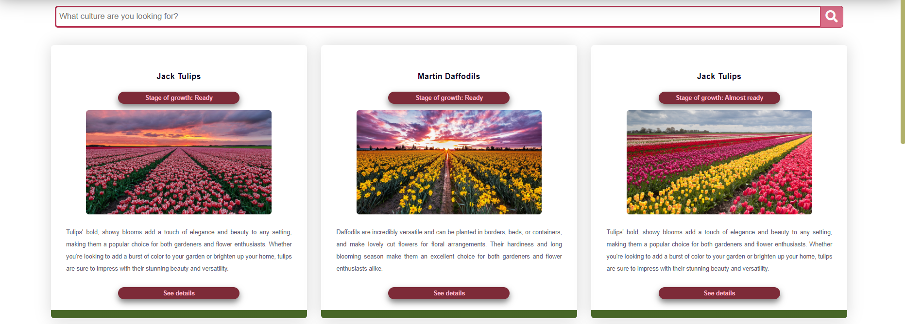

Community Draft
Scholarly HTML
- Authors
-
Miruna-Diana Curduman
&
Maria Todirel
Abstract
Acest document descrie cum WeGa (Web Gardening) 2023 funcționează, ce a fost detalii au fost implementate și
cum va evolua în continuare.
Introducere
WeGa (Web Gardening) 2023 o aplicație Web de tip asistent digital pentru cultivarea florilor de primăvară
(lalele, zambile, narcise etc.) și vânzarea lor. Un utilizator își poate gestiona mai multe culturi
concomitent,
indiferent de tipul acestora.
Astfel, aplicația va primi date de interes de la o serie de senzori, precum umiditatea solului, temperatură
ambientală și un flux de imagini vizand dezvoltarea plantelor monitorizate. În funcție de valorile
senzorilor și perioada de creștere a plantei cultivate, se dorește ca aplicația să sugereze acțiuni de
irigare, ajustare a temperaturii si/sau luminozitatii, recoltare.
Pentru optimizarea procesului de vânzare, utilizatori interesați de achiziționarea de flori își vor putea
exprima interesul de achiziție și vor fi notificați (via mesaje prin e-mail și notificări în cadrul unui
browser Web) când florile de interes sunt gata de achiziție. Momentul de recoltare/vânzare se va implementa
pe baza unei analize a ponderii culorilor din fluxul de imagini.
În realizarea acestei aplicații au fost folosite noțiuni de HTML, CSS și JS, pentru a se implementa o
interfață interactivă și responisive pentru orice tip de dispozitiv.
Obiectivele noastre în realizarea acestei aplicații sunt
- implementarea tuturor funcționalăților necesare;
- crearea unei interfețe responsive;
- permiterea unui rol de administrator pentru fundatori aplicației;
- crearea și menținerea unei baze de date cu utilizatori;
- implementarea unui algoritm eficient și corect de monitorizare;
- sincronizarea datelor ce țin de culturi.
Structură
Documentul nostru este momentan compus din următoarele:
- Home (index.html) = pagina principala a aplicatiei.
- Buy (buy.html) = pagina unde utilizatori pot achizitiona culturi.
- My Cultures (mycultures.html) = pagina unde utilizatori își pot monitoriza culturile.
- Account (account.html) = pagina de unde utilizatorul se poate conecta, creea cont.
- About (about.html) = pagina care conține câteva detalii despre proiect și fondatori.
- Help (help.html) = pagina unde utilizatori pot găsii tutoriale despre caracteristicile aplicatiei.
I. General elements
I.1. Root
Selectorul CSS :root a fost folosit pentru a crea variabile culorilor în fișierul CSS care pot fi
utilizate în
întregul document.
Apăsați - Codul pentru Root
:root{
--bg: white;
--darkerstpink: #b62f4f;
--darkpink: #da6e88;
--lightpink:#dda1a9;
--vivagreen:#32560b;
--darkgreen:#323b0b;
--green:#7f981b;
--lightgreen: #b0b06a;
}
I.2. Head
Fiecare pagina și subpagină conține o secțiune de head, similară cu următoare (index.html):
Apăsați - Codul pentru Head
<head>
<meta charset="UTF-8"> <
<meta http-equiv="X-UA-Compatible" content="IE=edge">
<meta name="viewport" content="width=device-width, initial-scale=1.0">
<link rel="stylesheet" href="https://cdnjs.cloudflare.com/ajax/libs/font-awesome/5.15.4/css/all.min.css">
<link rel="stylesheet" href="css/index.css">
<link rel="stylesheet" href="https://use.fontawesome.com/releases/v5.15.3/css/all.css"
integrity="sha384-qziRS6z5U6F/AKeYwMjNkTvPLm1TFSBp3c5Fk9z1WZAA8eqo+xPwBwYHgR0MWrO1" crossorigin="anonymous">
<link rel="stylesheet" href="css/all.css">
<script src="js/myJs.js" defer> </script>
<script src="js/sliderJs.js" defer> </script>
<title>Home
</head>
I.3. Header
De asemenea, in cadrul <header> contine bara de navigare. Aceasta contine linkuri catre
fiecare pagina a aplicatiei și câteva iconițe cu coșul de cumpărături (momentan încărcat cu produse de
noi) și pagina utilizatorului. Când pagina are o anumită lățime în locul titlurilor paginilor va apărea
un alt icon care va deschide un drop-down meniu.
Apăsați - Codul pentru Header
<header class="header">
a href="index.html" class="logo">
<script src="https://cdn.lordicon.com/ritcuqlt.js"></script>
<lord-icon src="https://cdn.lordicon.com/zrvxzslu.json" trigger="hover" style="width:70px;height:70px">
</lord-icon>
<p style="color: white; font-size: 12px; font-family: 'Roboto', sans-serif; margin-left: 7px"> WEB GARDENing
</p>
</a>
<nav class="navbar">
<a href="index.html">Home</a>
<a href="#buy">Buy</a>
<a href="mycultures.html">MyCultures</a>
<a href="account.html">Account</a>
<a href="#help">Help</a>
</nav>
<div class="icons">
<div class="fas fa-shopping-cart" id="cart-btn"></div>
<div class="fas fa-bars" id="menu-btn"></div>
<div class="fas fa-solid fa-user" id="account"></div>
</div>
<div class="search-form">
<input type="search" id="search-box" placeholder="search here...">
<label for="search-box" class="fas fa-search"></label>
</div>
<div class="cart-items-container">
<div class="cart-item">
<span class="fas fa-times"></span>
<img src="images/cart-item-1.png" alt="">
<div class="content">
<h3>cart item 01</h3>
<div class="price">$15.99/-</div>
</div>
</div>
<div class="cart-item">
<span class="fas fa-times"></span>
<img src="images/cart-item-2.png" alt="">
<div class="content">
<h3>cart item 02</h3>
<div class="price">$15.99/-</div>
</div>
</div>
<div class="cart-item">
<span class="fas fa-times"></span>
<img src="images/cart-item-3.png" alt="">
<div class="content">
<h3>cart item 03</h3>
<div class="price">$15.99/-</div>
</div>
</div>
<div class="cart-item">
<span class="fas fa-times"></span>
<img src="images/cart-item-4.png" alt="">
<div class="content">
<h3>cart item 04</h3>
<div class="price">$15.99/-</div>
</div>
</div>
<a href="#" class="btn">My Basket</a>
</div>
</header>
II. Home Page
Pagina de acasa este compusă din trei secțiuni principale:
1. Descrierea = o scurta descrierea a aplicatiei si
functionalitatilor ei;
Apăsați - Codul pentru descriere:
/*html*/
<div class="description-container">
<h2 style="text-indent: 20px;">
Welcome to our digital assistant for spring flower cultivation and sales! Our web application allows
you to manage multiple flower crops simultaneously, providing real-time data from a series of
sensors such as soil moisture and ambient temperature, as well as a continuous stream of images
tracking the development of your plants. Based on these sensor readings and the growth period of
your cultivated plants, our application will suggest actions such as irrigation, temperature or
lighting adjustments, and harvest timing to optimize their growth and development. In addition, for
optimized sales, potential buyers can express interest in purchasing flowers and will be notified
via email and browser notifications when their desired flowers are ready for purchase. Join us today
and experience the benefits of our digital assistant for spring flower cultivation and sales!
</h2>
</div>
/*css*/
.description-container {
width: 78%;
margin: 0 auto;
background-color: #b0b06a;
background-repeat: no-repeat;
background-position: 0 0.62em;
box-shadow: 0 0 2.5em rgb(0 0 0 / 15%);
border-radius: 0.5em;
}
.description-container h2 {
display: flex;
flex-direction: column;
align-items: center;
justify-content: center;
width: 100%;
text-align: justify;
font-size: 1.5em;
margin: auto;
padding: 1em;
font-weight: 600;
color: var(--darkgreen);
}
2. Users cultures = o sectiune cu imaginile culturile
utilizatorilor;
Apăsați - Codul pentru Users Cultures slider:
/*html*/
<div class="image-slider-container">
<h1>Users cultures</h1>
<div class="slider">
<button class="btn-slide prev"><i class="fas fa-3x fa-chevron-circle-left"></i></button>
<button class="btn-slide next"<i class="fas fa-3x fa-chevron-circle-right"></i></button>
<div class="slide">
<img src="photo/Daffodil-Field.png" alt="Photo1">
</div>
<div class="slide">
<img src="photo/Tulips-Field-2.png" alt="Photo2">
</div>
<div class="slide">
<img src="photo/Daffodils-Field-2.png" alt="Photo3">
</div>
<div class="slide">
<img src="photo/Tulips-Field-3.png" alt="Photo4">
</div>
</div>
<div class="dots-container">
<span class="dot active" data-slide="0"></span>
<span class="dot" data-slide="1"></span>
<span class="dot" data-slide="2"></span>
<span class="dot" data-slide="3"></span>
</div>
</div>
<script src="js/test.js"></script>
/*css*/
.image-slider-container {
width: 100%;
height: 100%;
color: #b62f4f;
line-height: 1.9;
z-index: 10;
background-color: #f7f5f5;
}
.image-slider-container h2{
text-align: center;
font-size: 2rem;
line-height: 3.5;
}
.slider{
position: relative;
max-width: 80rem;
height: 50rem;
margin: 0 auto;
overflow: hidden;
}
.slide{
position: absolute;
top:0;
width: 100%;
height: 50rem;
display: flex;
align-items: center;
justify-content: center;
transition: transform 1s;
}
.slide > img{
width: 100%;
height: 100%;
object-fit: cover;
}
button{
background: none;
border: none;
}
button .fas{
color: #f7f5f5;
}
.btn-slide{
position:absolute;
top:50%;
z-index: 20;
height: 5.5rem;
width: 5.5rem;
cursor: pointer;
}
.prev{
left: 0;
transform: translate(0, -50%);
}
.next{
right: 0;
transform: translate(0, -50%);
}
.dots-container{
display: flex;
justify-content: center;
align-items: center;
position: relative;
}
.dot{
width: 25px;
height: 5px;
margin: 15px 5px;
border-radius: .5rem;
background: #b62f4f;
cursor: pointer;
}
.dot.active{
background:#da6e88
}
3. Features = o sectiune dedicata principalelor
functionalităti.
Apăsați - Codul pentru Features
<div class="row-title">
<h1>Our Features</h1>
</div>
<div class="row">
<div class="column">
<div class="card">
<div class="icon">
</div>
<h3>User Friendly</h3>
<p>
Easy-to-use dashboard to manage multiple flower crops.
</p>
</div>
</div>
<div class="column">
<div class="card">
<div class="icon">
</div>
<h3>Super Secure</h3>
<p>
Secure online store to showcase and sell your flowers.
</p>
</div>
</div>
<div class="column">
<div class="card">
<div class="icon">
</div>
<h3>Quick Support</h3>
<p>
Real-time sensor data for the optimal flower growth.
</p>
</div>
</div>
<div class="column">
<div class="card">
<div class="icon">
</div>
<h3>Notifaction System</h3>
<p>
Automatic notifications when your flowers are ready to sell.
</p>
</div>
</div>
</div>
</div>
III. Buy Page
Aceasta pagină îi va oferi utilizatorului funcționalățile necesare pentru a achizitiona diferite cultori
de la producători, dar și de a le urmări pe cele care nu sunt înca pregătite. Pe pagină se vor încarca
un număr finit de culturi, userul trebuind să apese pe Butonul „See More” pentru a mai încarcă câteva.
De asemenea, fiecare cartonaș cu culturi are o poză cu aceasta, o scurta descriere a producătorului și
stagiul de creștere. În cazul în care acesta dorește să caute o cultură anume, se poate folosi de bara
de cautare.


1. Apăsați - Codul pentru Search Bar
-- Codul HTML --
<div class="wrap">
<div class="search">
<input type="text" class="search-term" placeholder="What culture are you looking for?">
<button type="submit" class="search-button">
<i class="fa fa-search"></i>
</button>
</div>
</div>
-- Codul CSS --
.search {
width: 100%;
height: 40px;
padding: 5px;
padding-bottom: 20px;
margin-bottom: 20px;
display: flex;
}
.search-term {
width: 100%;
border: 3px solid #b62f4f;
border-right: none;
padding: 5px;
height: 36px;
border-radius: 5px 0 0 5px;
outline: none;
color: #da6e88;
}
.search-term:focus{
color: #b62f4f;
}
.search-button {
width: 40px;
height: 36px;
border: 1px solid #b62f4f;
background: #da6e88;
text-align: center;
color: #fff;
border-radius: 0 5px 5px 0;
cursor: pointer;
font-size: 20px;
}
.wrap{
width: 88%;
top: 50%;
left: 50%;
}
2. Apăsați - Codul pentru Culture Card
-- Codul HTML --
-- Codul CSS --
3. Apăsați - Codul pentru Butonul See More
-- Codul HTML --
<section class="see-more">
<div class="see-more-button">
<h2>
View more
</h2>
</div>
</section>
-- Codul CSS --
.see-more .see-more-button h2{
text-align: center;
color:#ffb7c7;
font-size:20px;
font-weight: bold;
}
.see-more{
margin-top: 30px;
height:20vh;
width:100vw;
display: flex;
justify-content: center;
align-items: center;
flex-direction: column;
}
.see-more .see-more-button{
border-radius: 10px;
height: 50%;
width: 20%;
background-color: #7d2b38;
display: flex;
justify-content: center;
align-items: center;
flex-direction: column;
box-shadow: 0 5px 10px rgb(0 0 0 / 50%);
}
.see-more .see-more-button:hover{
background-color:#dda1a9 ;
cursor: pointer;
}
Authors & Contributors
If the document has authors or contributors, they are listed in a section
with typeof sa:AuthorsList. The content of that section
is an h2 title appropriate for it, followed by either a ul or
ol (depending on whether the authors are considered ordered, which is
highly dependent on the discipline’s culture).
Each li in that list must feature a typeof of
sa:ContributorRole and a property of either schema:author or
schema:contributor depending on which is applicable. Modeling with schema.org
roles is explained in the Roles section.
The sa:ContributorRole span is structured as follows:
-
Exactly one
span with a property of either
schema:author or schema:contributor (matching the one that points to the
role) and typeof either schema:Person (if the author is a sentient
entity) or schema:Organization (if it is a collective thereof). How to capture
persons and organizations is detailed in the creatively-named
Persons & Organizations section.
-
Zero or more
a elements with a property of
sa:roleAffiliation, one for each affiliation of the author in producing the
article. Each of those elements needs further to have a resource
attribute matching the one on the affiliation it is pointing to and an
href attribute linking to the element on which that affiliation is
defined. The a element may contain arbitrary text (typically a number,
letter, or symbol matching that used by the target in its own list). These should not
occur if the agent is an organization.
-
Zero or more
a elements with a property of
sa:roleAction, one for each comment describing the author’s specific
contribution to the work (e.g. "Authors contributed equally" or "Designed the study").
Each of those elements needs further to have a resource
attribute matching the one on the note it is pointing to and an
href attribute linking to the element which contains that note. The
a element may contain arbitrary text (typically a number, letter, or
symbol matching that used by the target in its own list).
-
Zero or one
ul elements. Each of its li children has a
property of schema:roleContactPoint and a typeof set
to schema:ContactPoint. The content of each li can be anything
that describes a manner of contacting the author in question, but it will typically
involve properties such as schema:email, schema:telephone,
schema:address, schema:description (for arbitrary descriptions of the
contact method), or for journals publishing to the Web of the early 1980s
schema:faxNumber.
Disclosures
Disclosure information is a list of disclosure actions described in a simple triples
structure.
-
The subject is always one of the contributor roles (example: Author)
-
The name of the action (nerd-talk: predicate, human-speak: verb) is a string describing
the action (example: "received beer from")
-
The recipient, or object, is the direct object of the sentence (example: Guinness)
Scholarly Article Vocabulary
A limited number of classes and properties are currently not available from
schema.org. In most if not all cases it would be desirable to
make them available there, but while work is progressing it is simpler to define them
ourselves.
The current URL for the Scholarly Article vocabulary is
http://ns.science.ai/. It may be desirable (should the vocabulary persist) to
use a different URL. But this issue might go away if schema.org steps up.
You can read the definitions for the SA vocabulary.
Acknowledgements
Scholarly HTML would like to thank Scholarly HTML
(you read that right) for blazing the trail perhaps a few years too soon. Particularly,
the following people were particularly kind and helpful:
Peter Sefton,
Richard Smith-Unna, and
Peter Murray-Rust.
PLOS has a
short
history of Scholarly HTML that is worth reading (and would be worth updating).
Dan Brickley was kind enough to drop by the office to chat about our usage of
schema.org even though he was tired and hungry. As
always, examples involving fish tanks are the most helpful. Dave Cramer shared ideas
that we happily stole.
Patrick Johnston’s input has been crucial, notably in modeling authoring. We can only
hope that getting those details exactly right have not caused him to lose too much
sleep.
We also received very useful feedback and pointers from: Kjetil Kjernsmo (DAHUT!),
Silvio Peroni, Justin Johansson, Alf Eaton, Raniere Silvia, Kaveh Bazargan and Mike
Smith. We are very much indebted to the help provided us by Ivan Herman.
If we somehow forgot you in this list and you are too gracious to complain, we love you
all the same.